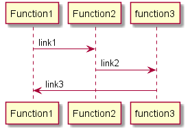
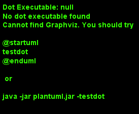

Component Documentation generation¶
This document adresses how to stucture a component documentation and recommendations about what we should provide as content for each source code element(Classes,Constructors/Destructors,functions,attributes etc…). Examples tested on real components and reusable templates will be given in order to improve developpers efficency.
Warning
We’ll not be specifiying any tool or how to perform documentation generation in this document
Syntaxes and keywords¶
Doxygen generates codes documentation using comment blocks and some keywords to structure documents.This following section will provide information about how to set a comment block for C++ codes and and a small description of doxygen most popular and used tags.
Comment blocks:¶
There is several ways to define a comment block in C++:
single line comment using
\\\:/// /// write your Documentation ///single line comment using
\\!://! //! write your documentation //!multi line comment using
/*!and*/:/*! * write your documentation */
Note
in the last case the intermediate * is optionnal.
Keywords:¶
doxygen provides several tags to use in your source code. Note that tags must be inserted in a comment block so doxygen knows it is part of structured text that needs to end up in the generated documentation. here are some useful tags that you can use to document your code:
\file:allows to give a name to the file that you want to generate documentation with:
/*! * \file test.cpp */
\date,\authorand\version:you can also add these tags in your file’s header to specify a date, the author and your file version
/*! * \date 05/2020 * \author * \version 01 */
\brief:you can use this tag to give a brief description of your stucture:
/*! * \brief give a description * you can also give a description in several line but do not forget to indent the block. */
@param:starts a parameter description for a function parameter with name <parameter-name>, followed by a description of the parameter:
/*! Example of motor motion managing. * @param speed,direction set the motor direction and speed. */ void MotionManager(uint32_t speed,MotorDirection direction) { }The
@paramcommand has also an optional attribute,dir, specifying the direction of the parameter. Possible values are[in],[in,out], and[out]. When a parameter is both input and output,[in,out]is used as attribute. Here is an example:/*! * @param[in] ParameterName give_the_parameter_description * @param[out] ParameterName give_the_parameter_description * @param[in,out] ParameterName give_the_parameter_description */
@return:allows to get a method or a fonction return:
/*! * @return ReturValue description_of_the_return value */
documentation’s Structures¶
documenting each part of your code ensures easy understanding and its maintenance,so you must provide a maximum of information. in this following section you’ll find recommendations about how to document your code elements.
component General informations¶
Introduction and Context
in this part you should give informations concerning the component and it’s context. these informations define the component’s identification and properties. The identification includes the component name, the author or developper, and it’s version as well. the component context expresses the the component’s utilities and the way it is intended to be used. this section is a general overview section that provides a brief description of what the component does. You can also add here more informations about the design rationale, applicability and objectives of the component.
fonctionnal description
the functionnal description provides a detailed functionnal specification of the component. giving here the functionnal architecture can provide easy understanding of the component’s modules and functions,it can also details a structured view of functions hierarchy. fonctionnal and UML diagrams can also be given in this section.
Sphinx supports UML diagrams thanks to the extension named PLantUML. See here how to set up PlantUML in sphinx.
Example:


How to use
describe here informations concerning the component selection, reuse and how to integrated it with third-party components. The purpose of the reuse manual is to assure the software engineers that the component fits their needs and is therefore suitable for reuse in a certain scenario, and give information about the component’s interfaces.
Memory footprint
component specificites¶
dependencies
constraintes and limitations
restrictions
Public elements:¶
Constructors/Destructors and parameters:
you can add documentation block to your Constructors and Destructors according to this following example:
class ClassName { public: /** * \brief constructor name and description * @param[in] ParameterArgument: Parameter description */ ClassName(Parameter &ParameterArgument); #Constructors have same names as the classes. }
functions and return type:
function and there return type must be documented as follows:
class ClassName { public: /** * \brief give the fonction name and a brief description of its behavior * @return ReturType: decribe the return type and exeption if exists */ ReturnType FunctionName(void); }
Private elements:¶
this section contains specially parameters attributes.
attributes or Parameter arguments:
attributes initializations should also be documented as the following example:
class ClassName { private: /** *\brief give the ParameterArgument name and describe briefly its behavior */ ParameterName &ParameterArgument; }
documentation example:¶
find bellow an example of a complete documentation on a composant blinky.h using previous
tags and comment blocks:
/*!*****************************************************************************
* \file blinky.h
* \date 2020
* \author
* \version 01
*******************************************************************************/
#ifndef __BLINKY_H__
#define __BLINKY_H__
#include <cstdint>
#include "LedDriverInterface.h"
class Blinky
{
public:
/**
* @brief Blinky constructor
* @param[in] arg_ledDriver A LedDriver implementing the LedDriverInterface
*/
Blinky(LedDriverInterface &arg_ledDriver);
/**
* @brief Start the blinking
*/
void start(void);
/**
* @brief Return the blinking state as a boolean
* @return bool: true if blinking is started, false if the blinking is not started
*/
bool isStarted(void);
/**
* @brief Stop the blinking
*/
void stop(void);
/**
* @brief Schedule the blinking
*/
void refresh(void);
private:
/** @brief m_ledDriver: initialising the led driver */
LedDriverInterface &m_ledDriver;
/** @brief m_counter: initialising a counter to reset the blinking */
uint16_t m_counter;
/** @brief m_isBlinking: this parameter return the blinking status */
bool m_isBlinking;
};
#endif